图鲁棒性论文速览
《Learning Graph Neural Networks with Noisy Labels （arxiv 2019)》
Motivation：标签噪声使泛化差距（测试准确率下降，训练准确率不变）增加。
Method:
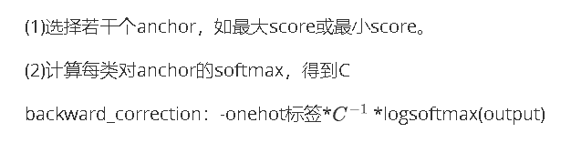
Strength: 方法简单，计算量小
Weakness: 结果疑似不好，根据NoisyGL
《Symmetric Cross Entropy for Robust Learning with Noisy Labels （ICCV 2019）》
Motivation：交叉熵：（1）hard class处理不好；（2）遇到noisy label表现下降很多。作者受反向KL散度启发提出了另一种交叉熵
Method:
交叉熵(CE)： -q(x)logp(x)
RCE: -p(x)logq(x)
最终loss: αCE+βRCE
Strength:
Weakness: 根据NoisyGL，效果比baseline高不了多少，可能是因为图数据的标签稀缺性
《iterative deep graph learning for graph neural networks better and robust node embeddings （Nips 2020)》
Motivation：
Method:
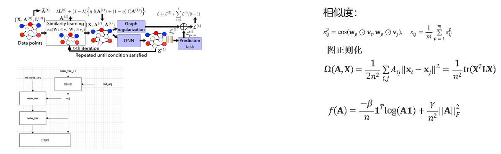
Strength:相似性使用了多头设置，学习能力更强。使用了历史邻接矩阵信息。Weakness:
《Adversarial Label-Flipping Attack and Defense for Graph Neural Networks （ICDM 2020）》
Motivation：社区标签和GCN输出具有一致性
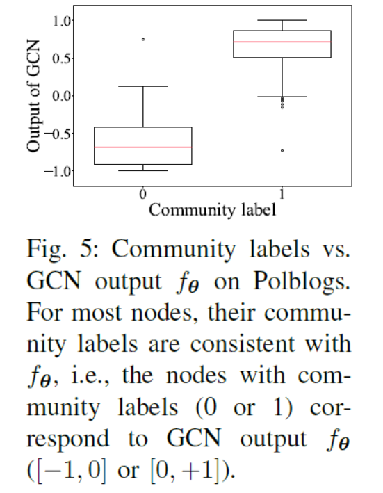
Method: 使用community信息来帮助分类。先Embedding再聚类（k-means+NodeVec），得到community标签。有了community label后，将训练GCN用来预测community label作为辅助自监督任务，将L-1层的隐藏特征输入，输出K-路softmax 分布。
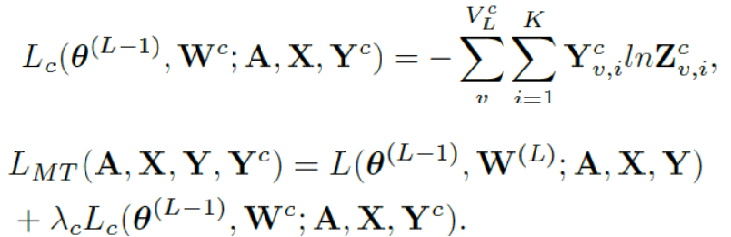
Strength: 形式简单
Weakness: 耗时严重（根据NoisyGL，运行时间最慢的第二个）。网络部分共享结构，此处不耗时。耗时应该在社区标签计算上。此处可能有改进空间。
《Data Augmentation for Graph Neural Networks (AAAI 2021）》
Motivation：最明显的方法涉及添加或删除节点或边。但问题仍然存在，哪些边缘需要改变？
Method:
（1）使用边缘预测器函数（文中使用的是GAE）来获取𝒢中所有可能和现有边缘的边缘概率。边缘预测器的作用是灵活的，一般可以用任何合适的方法代替。
(2) 使用预测的边概率，我们确定性地添加（删除）新（现有）边以创建修改后的图𝒢 ，该图用作 GNN 节点分类器的输入。
《NRGNN learning a lable noise-resistant graph neural network on sparsely and noisily labeled graphs 2021 KDD》
Motivation：由于图上的标签稀疏，错误标记的节点可能会影响其邻域内未标记的节点，从而难以接受正确标记节点的监督。为了解决这些问题，NRGNN 首先连接具有相似特征的节点以创建精细图。基于这个精细化的图，生成精确的伪标签，使未标记的样本能够接受来自正确标记的样本的更多监督，从而减少噪声标签的影响。
Method:
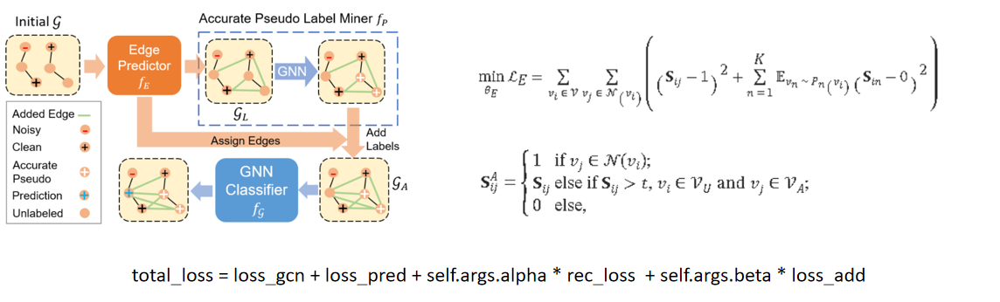
Strength: 使用了单独的边预测器，更好的利用特征信息
Weakness: 边预测器单使用该loss而不使用分类器，疑似无增长。在理论上假设节点的特征相似性与其标签有较高的相关性
《Unified Robust Training for Graph NeuralNetworks against Label Noise （PAKDD 2021)》
Motivation：结构邻近性（直接或间接连接）高的节点往往具有相似的标签->随机游走
Method:
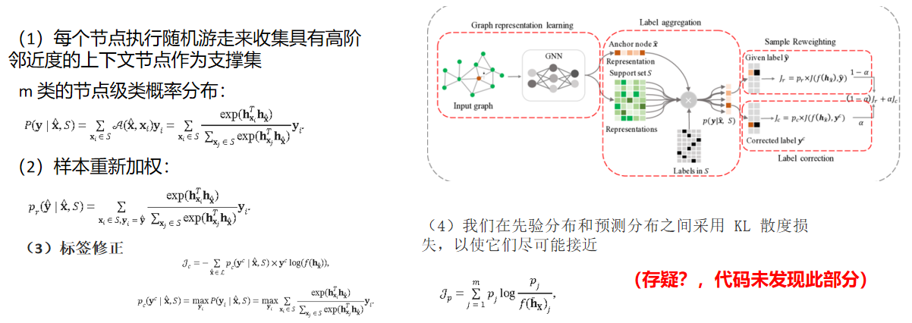
Strength: 样本有重新加权，可以让可靠标签在梯度更新时做出更多共享。标签校正在高噪声下，不能保证性能增益，而通过先验分布损失的正则化能发挥作用。
Weakness: 需要更多的时间复杂度和空间占用，因为要随机游走来收集
《EvenNet: Ignoring Odd-Hop Neighbors Improves Robustness of Graph Neural Networks （NIPS 2022)》
Motivation：源于符号网络的平衡理论提供了一个很好的视角：“敌人的敌人就是我的朋友，我朋友的朋友也是我的朋友。”
Method:
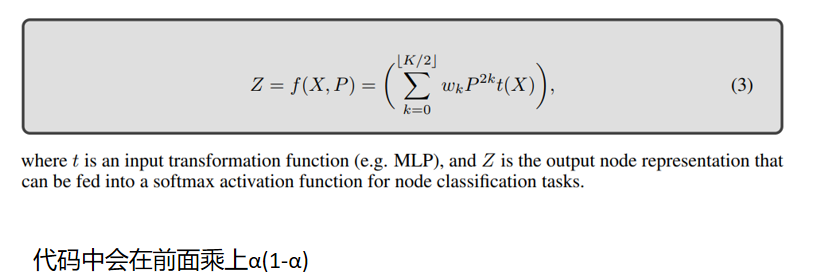
《Towards Unsupervised Deep Graph Structure Learning (WWW 2022)》
Method:
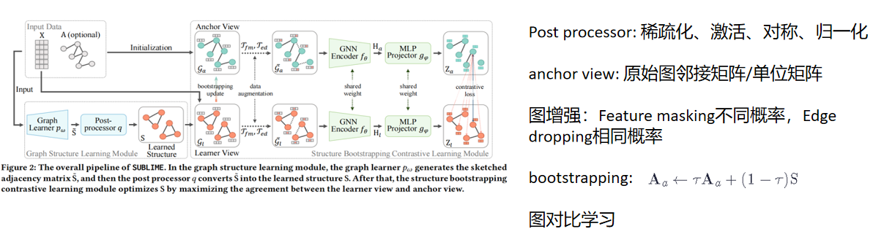
《Reliable Representations Make A Stronger Defender: Unsupervised Structure Refinement for Robust GNN（KDD 2022)》
Motivation：原始特征不能表示节点的节点的各种属性（如结构信息等）。
故方法要：1）携带特征信息，同时携带尽可能多的正确结构信息；2）对结构扰动不敏感。只有少数邻居的节点比高度节点更容易受到攻击。对抗性边缘倾向于连接两个低度节点。
Method:
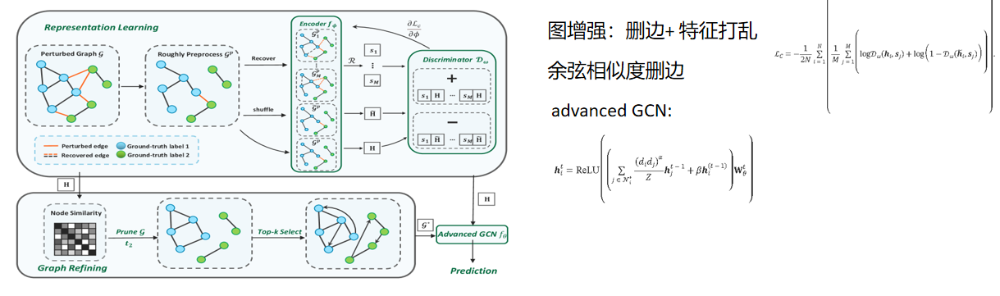
Strength: 图增强提高学习能力。Advanced GCN中针对低度高度做了不同的聚合权重
Weakness: 相似度策略比较单调。特征打乱如果按类内打乱效果会更好（（ICML 2024）Feature Distribution on Graph Topology Mediates the Effect of Graph Convolution: Homophily Perspective）。
《toward robust graph neural networks for noisy graphs with sparse labels (2022WSDM)》
Strength:使用了单独的边预测器，更好的利用特征信息
Method:
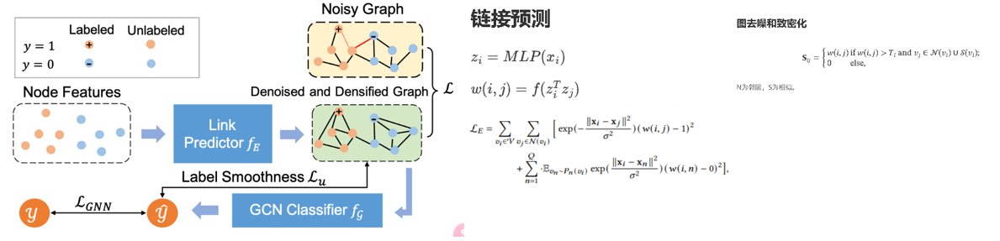
《Learning on Graphs under Label Noise （ICASSP 2023)》
Motivation：需要一种没有标签信息的正则化项，以获得针对标签噪声的卓越模型泛化能力
Method: 首先对图进行增强，第一种是随机丢边，第二种是随机mask节点属性。再使用对比学习和标签矫正。
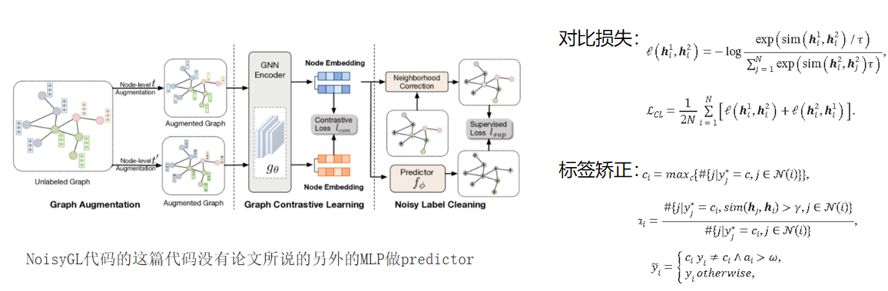
Strength:两次图增强都公用一套GCN，耗时小。使用了多种图增强技术。图增强过程中不涉及标签。
Weakness:方法简单。相当于只进行了图增强+标签矫正。
《Multi-teacher Self-training for Semi-supervised Node Classification with Noisy Labels （ACM MM 2023)》
Motivation：根据文献《Selc: Self-ensemble label correction improves learning with noisy labels.》，在带有噪声标签的数据集上训练神经网络模型时，模型倾向于首先学习简单(干净)的样本。
Method:
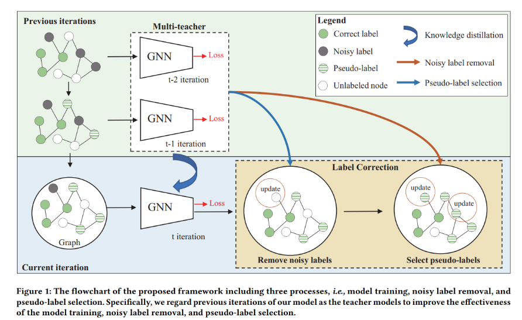
使用先前的作为教师模型，并积累教师模型的参数。来进行标签处理
《Robust Training of Graph Neural Networks via Noise Governance（WSDM 2023）》
Motivation：作者指出，虽然 NRGNN 强调通过链接预测为未标记节点提供额外的监督，但它并没有区分错误标记和正确标记的节点。相反，它只是不加区别地连接具有相似特征的节点，这可能会导致错误标记节点的影响扩散。为了解决这个问题，作者提出了RTGNN，它在NRGNN的基础上构建，利用Co-teaching中的小损失准则来进一步区分可信和不可信节点，并纠正一些不可信节点的标签，减轻一些不可信节点的标签。
Method:
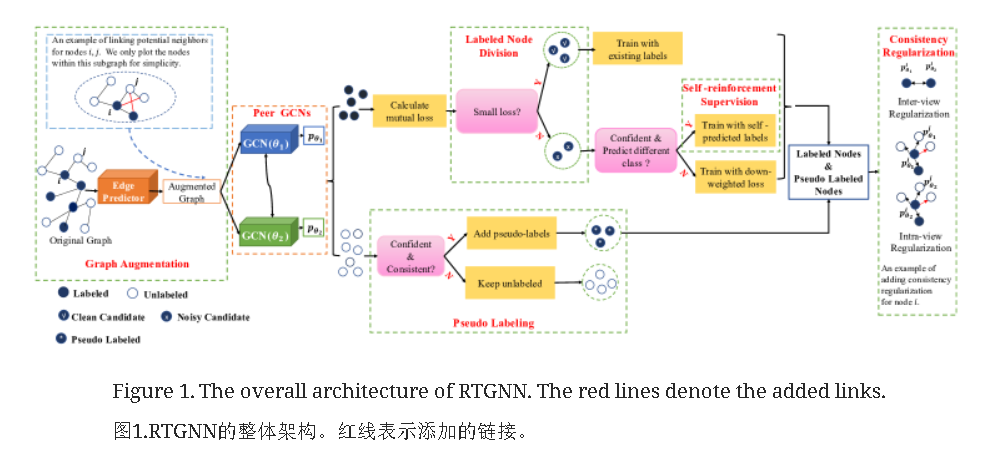
边预测器部分类似NRGNN第二部分类似于coteaching，并对peer GCN进行KL散度正则化
Strength: 划分了多种节点的类型，cl、ns、sr。具有NRGNN的优点。
Weakness:NoisyGL中显示RTGNN疑似效果在大部分数据集上都不如GCN。多个神经网络，时间复杂度略高。
《Robust Node Classification on Graph Data with Graph and Label Noise （AAAI 2023)》
Method:
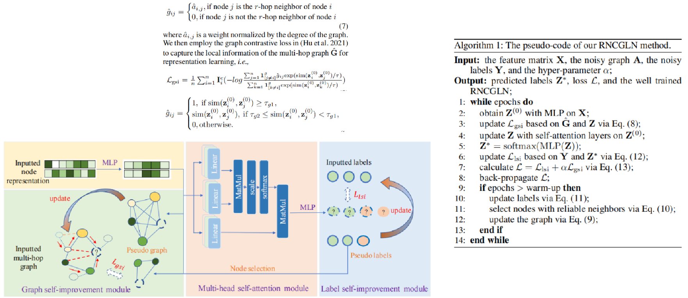
Strength:
Weakness: 耗时严重。NoisyGL显示是最慢的，几千倍于GCN
《Clnode:Curriculum learning for node classification》（WSDM 2023）
Motivation：这些工作通常假设所有训练节点的贡献相等。事实上，训练节点的质量差异很大
Method:
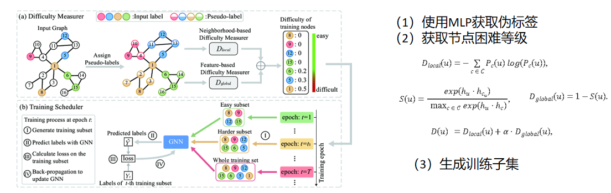
Strength:将节点区分开来处理
Weakness:假设同质性
《Noise-robust Graph Learning by Estimating and Leveraging Pairwise Interactions （TMLR 2023)》
Motivation：
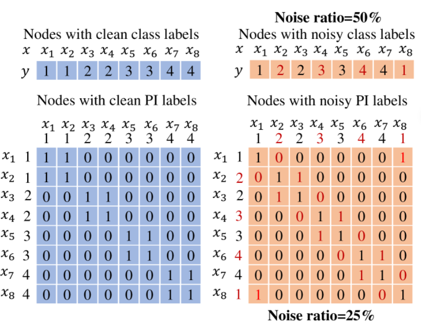
Method:
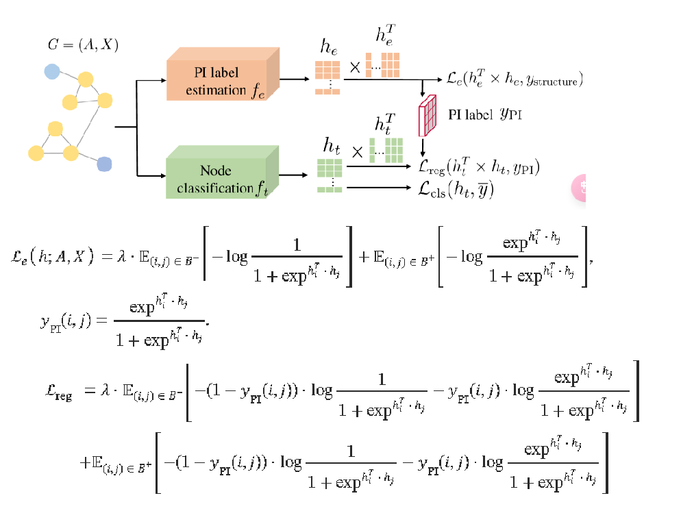
Strength: 有效地利用了节点相互的关系，找到了一种比标签噪声要小的噪声特性Weakness: 只在同亲图（即，如果两个节点相连，那么它们很有可能具有相同的节点标签）上表现优异
《Universally Robust Graph Neural Networks by Preserving Neighbor Similarity （arxiv 2024)》
Motivation：普通鲁棒模型依靠自我特征的相似性来检测良性链接中的潜在恶意链接。然而，这种策略可能不适合在异质性场景下增强gnn的对抗鲁棒性。攻击与节点相似度呈负相关。图攻击者倾向于连接相似度得分值较低的节点对。
不同相似度矩阵下的攻击表现：相似度矩阵定义：
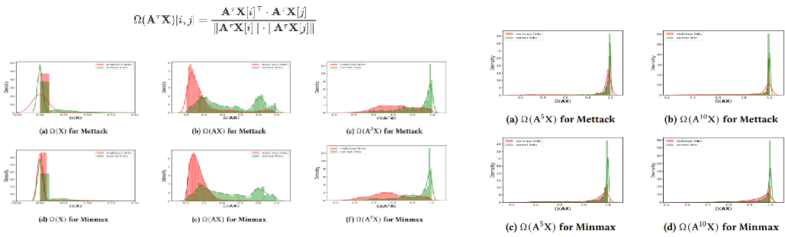
Method:
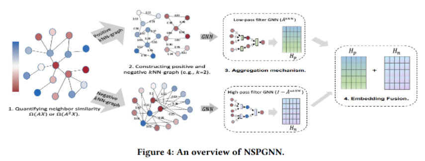
其分为正knn和负knn。对于正knn，我们为每个节点挑选出最接近的top-𝑘邻居来构建相应的kNN图。对于负knn，和正knn相反，这种方式可以捕获极端不同的信息，并作为正图的对立物。在双knn图构建阶段之后，确定聚合机制的最佳选择以有效地传播节点特征，同时保持邻居相似度是很重要的。为此，我们引入了一种自适应邻居相似度引导的传播机制。节点表示学习的信息流的形式为:
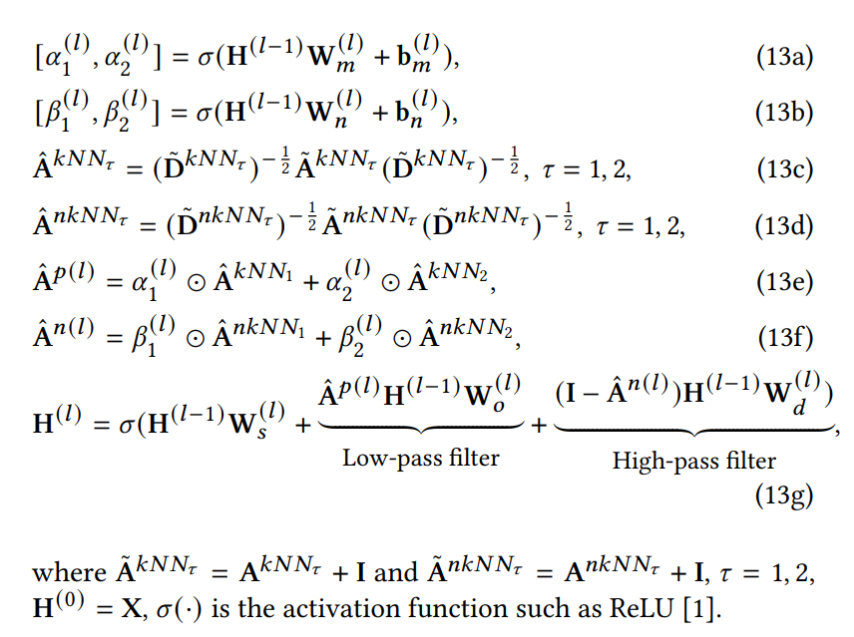
Strength:从正反两方面考虑问题，以往一般只考虑一边，可解释性强
Weakness:是否忽略了中通滤波，如arxiv2023的Robust Mid-Pass Filtering Graph Convolutional Networks